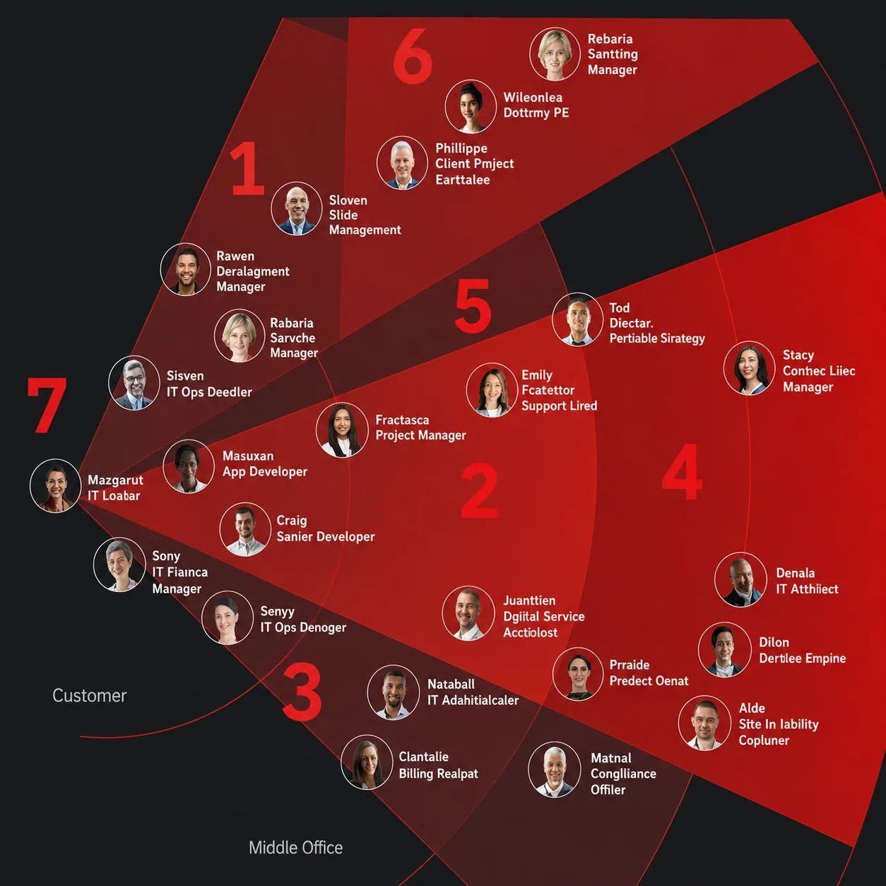
The
Problem
The existing landing page functioned primarily as a static link farm intended to assist new users. However, user engagement was low, with less than 5% utilizing the landing page regularly. Many users favored bookmarking specific offerings in their browsers, indicating that the static landing page did not provide a meaningful or personalized experience.
Beyond the low usage rates, the landing page lacked relevance for returning users, offering no functionality to address their specific workflows or frequent needs. For many, navigating the platform required repetitive steps that the landing page failed to simplify or streamline.
My
Role
Lead research, prototyping, and UI design. Coordinated multi-team collaboration, widget guidelines, and design system standards.
Read details →
Read details →
Read details →
Read details →
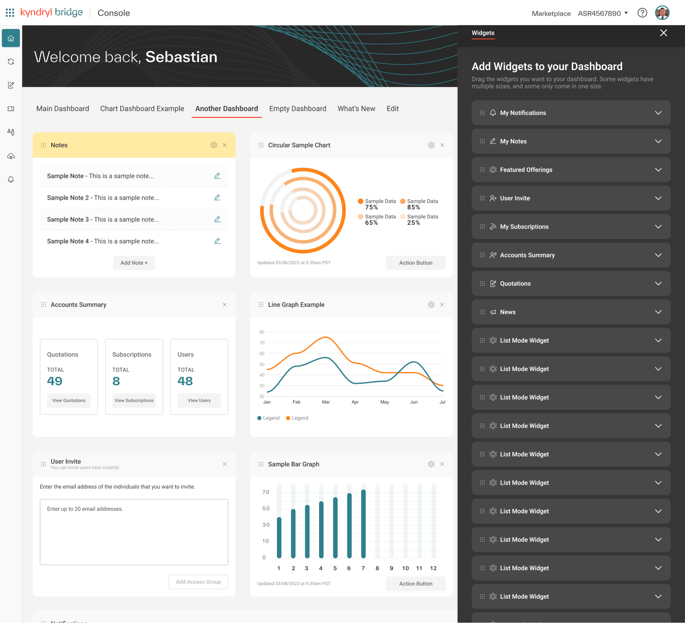
Increase in daily usage after launch of the personalized dashboard.
Reduction in task completion time thanks to streamlined navigation and customizable widgets.
- Leadership buy-in secured
- Leadership pitch
- Engagement and efficiency
- Increase in daily usage
- Platform wide guidelines
Requirements
Assessment
Kyndryl Bridge is a modular multi-cloud management platform where applications operate independently but share common elements like accounts, users, and permissions. Because a static link farm couldn't adapt to these diverse use cases, I made the decision to pivot the project into a dynamic, personalized user experience.
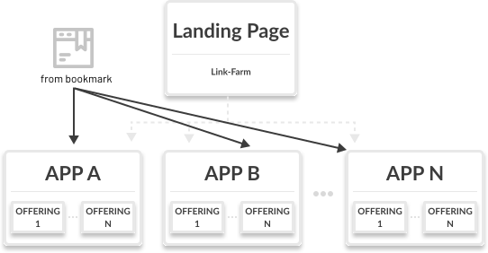
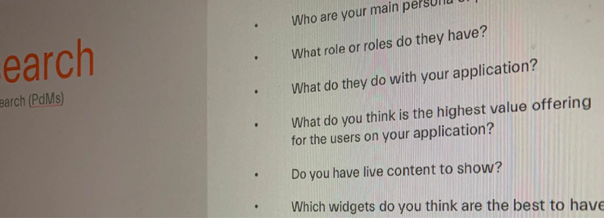
Research
- Subject Matter InterviewsEngaged with delivery partners, product owners, UX designers, and development managers to gather insights about user needs, platform pain points, and how applications were managed and used.
- User InterviewsConfirmed low usage of the landing page and redefined user journeys based on real-world workflows, uncovering navigation challenges and inefficiencies.
- Pattern IdentificationAnalyzed user journeys across diverse personas to identify common paths, frequent tasks, and usage patterns, reinforcing the need for a more personalized and efficient starting point.
Solution &
Prototyping
Created detailed user journeys that illustrated how different personas would interact with the platform, highlighting key navigation improvements and workflow efficiencies. Developed low-fidelity mockups to visually represent the concept of a dynamic dashboard. These were used to pitch the idea to leadership, successfully securing buy-in for a more resource-intensive and impactful solution.
Designed mid-fidelity prototypes in Figma, explicitly defining the dashboard’s key functionalities: Fully Customizable Layouts, Multi-Dashboard Capability, Widget Library contributions, and Permission-aware sharing limits.
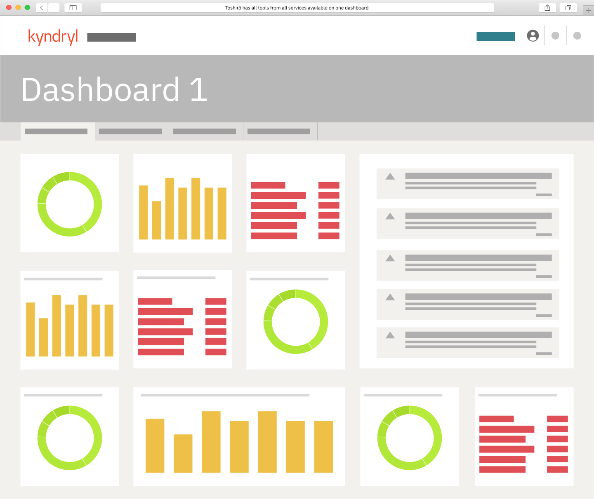
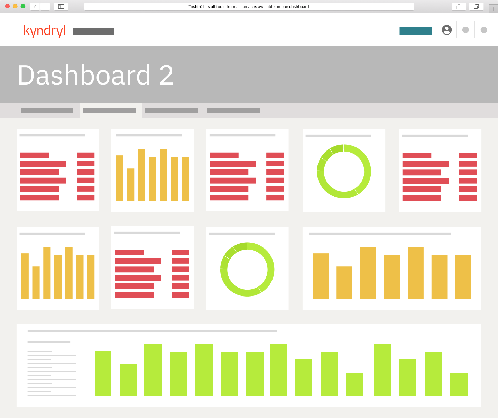
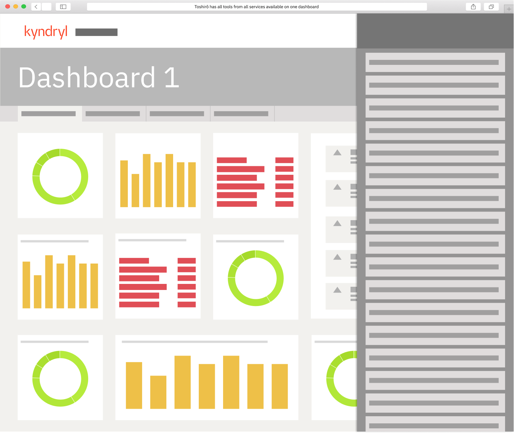
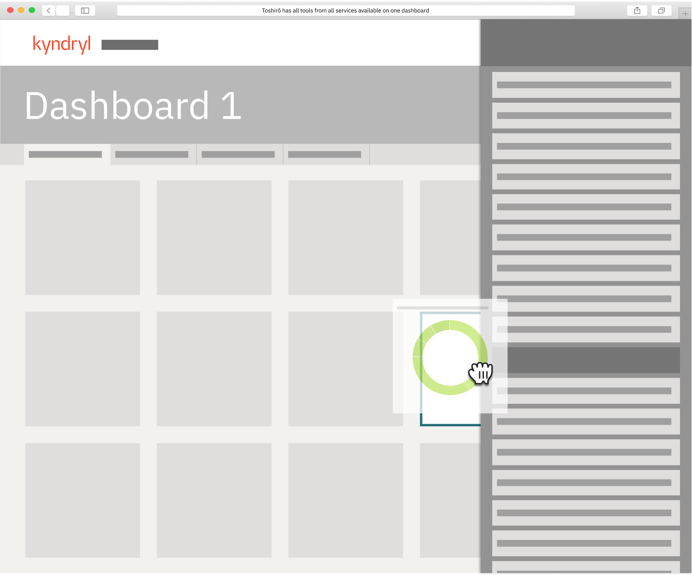
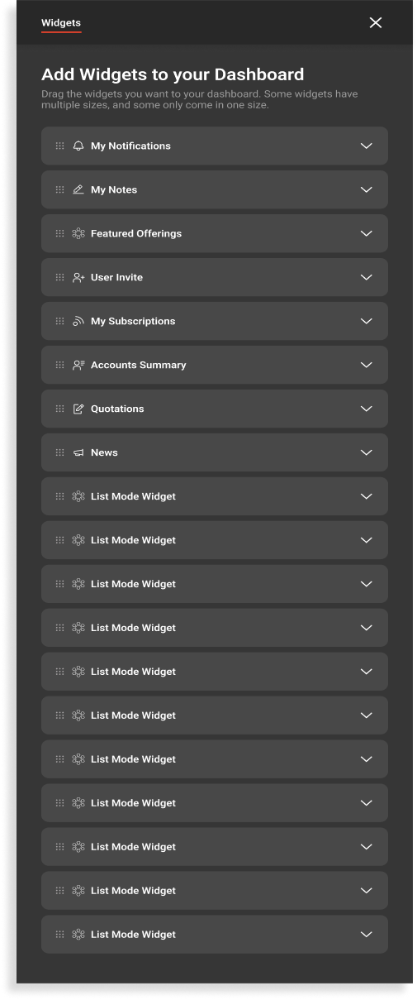
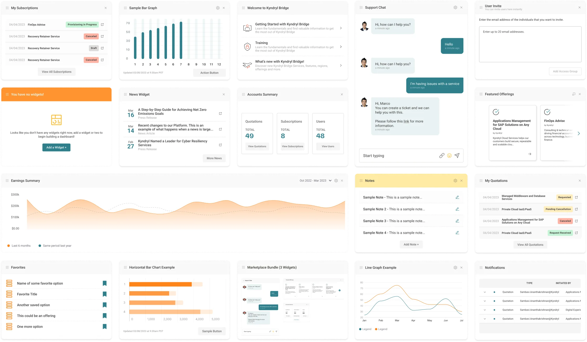
Standardization
& Delivery
Coordinated a multi-team effort to educate stakeholders on widget creation and usage. Established widget design guidelines and documentation to ensure consistency across applications. Defined a clear process for widget design and development, including approval workflows and quality assurance checks.
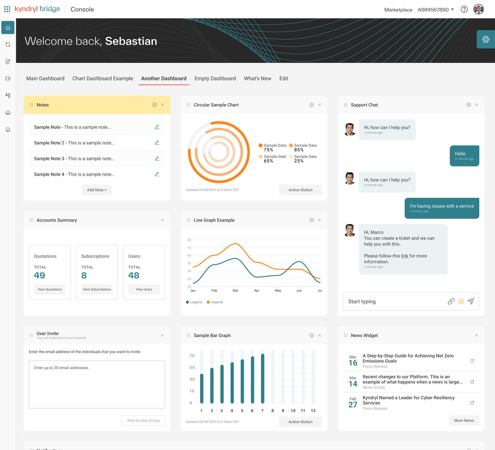
Looking
Back
What went well?
Effective Leadership PitchThe low-fidelity mockups and strategic presentation successfully secured leadership buy-in, transforming the scope from a static UI update to a dynamic, user-centric dashboard project.
Data-Driven DecisionsInsights from user interviews and subject-matter experts shaped the dashboard’s personalized features, directly addressing low engagement (5% usage) and improving relevance for daily workflows.
Improved Engagement and EfficiencyPost-launch, the dashboard saw a 20% increase in daily usage, with task completion times reduced by 35% due to streamlined navigation and customizable widgets.
Collaborative AlignmentEstablished clear widget guidelines and streamlined multi-team collaboration, ensuring consistent standards across a diverse platform architecture.
What could I have done better?
Facilitating Team EngagementWhile I successfully led the internal playbacks and ensured alignment, I could have invited team members to co-facilitate certain sessions. This approach would have encouraged broader ownership, nurtured cross-functional leadership, and fostered a more diverse exchange of ideas.
Optimizing Testing ScopeAlthough the user testing yielded actionable insights, expanding the scope to include a wider variety of edge cases could have further validated the dashboard’s versatility and uncovered additional opportunities for refinement.
Structured Post-Launch MonitoringWhile the iterative improvement process was effective, establishing a more formalized post-launch monitoring framework could have streamlined the collection of user feedback, enabling quicker adjustments and long-term optimization.